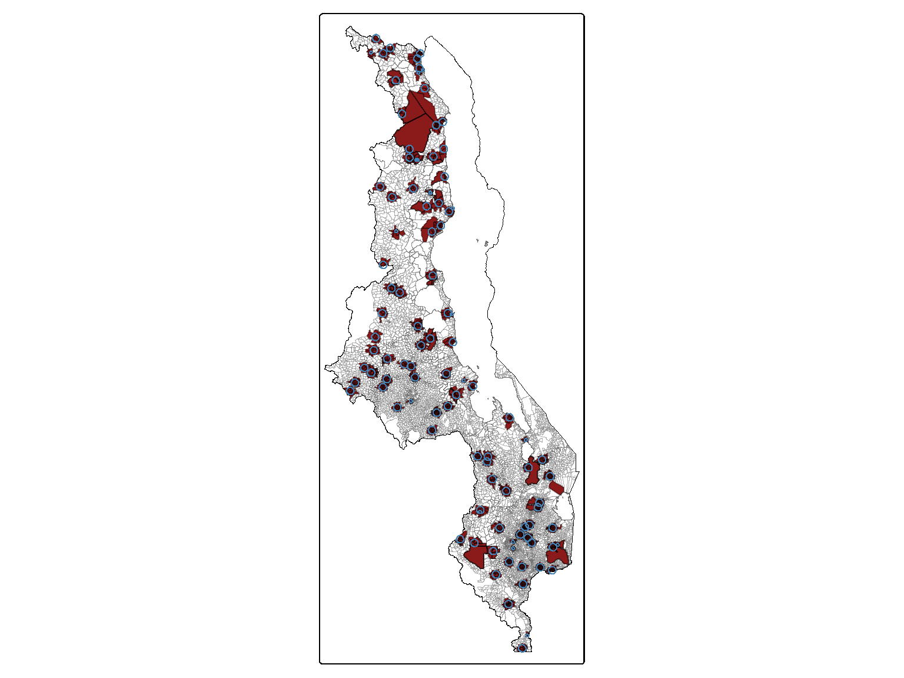
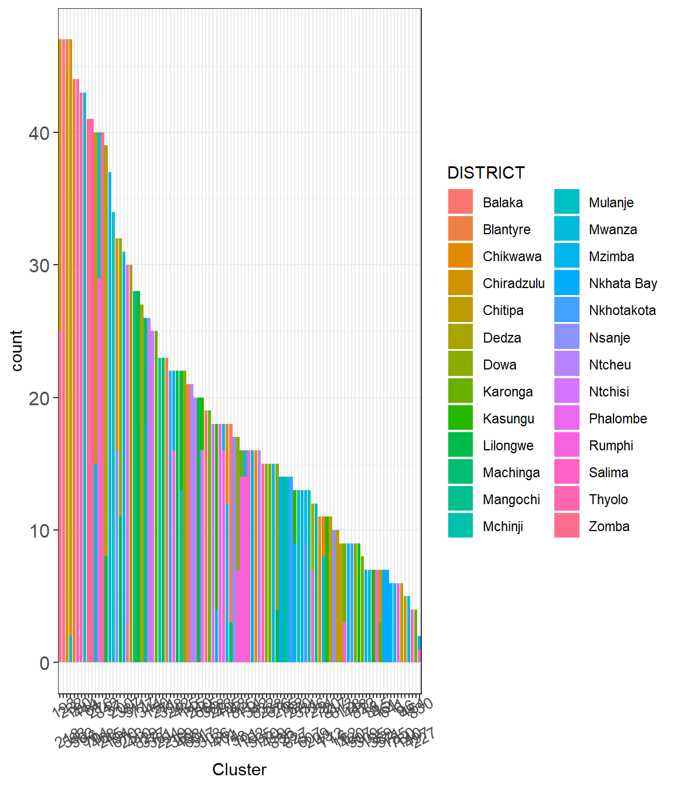
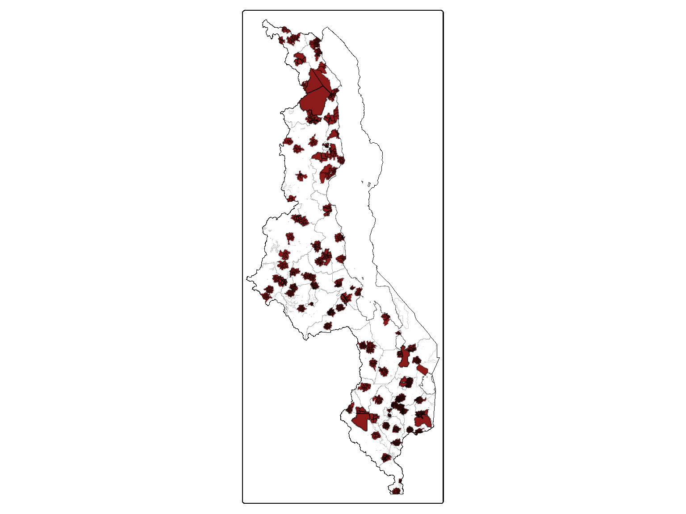

In this study, we are trying to identify the optimal level of aggregation of maize grain Se composition data, hence different set of spatial aggregation units (areal units) were generated based on the administrative units of the country (Admin level 4 - EAs, Admin level 2 - districts), and based on household locations. For instance, areas based on the clusters reported in the DHS dataset. Therefore, spatial information regarding the boundaties (i.e., shapefiles) of Malawi are necesiary for our analysis.
Code
# Loading packageslibrary(spdep) # grid and neighbourslibrary(raster) # (spatial) raster data manipulationlibrary(dplyr) # data wrangling library(stringr) # string data manipulation library(ggplot2) # data visualisationlibrary(sf) # spatial data manipulationlibrary(tmap) # spatial data visualisationlibrary(DT) # pretty & interactive tables# Loading data# Admin Boundaries for Malawi: EAsea_bnd <-st_read(here::here("data", "mwi-boundaries", "EN_NSO" , "eas_bnd.shp"), quiet =TRUE)# TAsta_bnd <-st_read(here::here("data","mwi-boundaries","mwi_adm_nso_hotosm_20230329_shp", "mwi_admbnda_adm3_nso_hotosm_20230329.shp"), quiet =TRUE)# Districtsdist_bnd <-st_read(here::here( "data","mwi-boundaries","mwi_adm_nso_hotosm_20230329_shp", "mwi_admbnda_adm2_nso_hotosm_20230329.shp"), quiet =TRUE)dist_bnd <-st_make_valid(dist_bnd) # Check this# Maize Se conc.(from cleaned from 00_cleaning-maize.R)maize.df<-readRDS(here::here("data", "inter-output", "mwi-grain-se_raw.RDS")) %>%## Getting only entries with maize Se valuesfilter(!is.na(Se_raw) & Crop =="Maize")# Plasma Se conc. (cleaned from 00_cleaning-dhs.R)plasma.df <-readRDS(here::here("data", "inter-output","dhs_se_gps.rds")) %>%# removing entries with missing values in plasma Se conc.filter(!is.na(selenium))
We accessed and explored a number of boundaries from different sources to identify those that were of enough quality and useful for our analysis (i.e. data provenance is found in Section 1.3). Documenting the cleaning and decision made,and the final datasets used is the purpose of this section.
3.0.1 Administrative boundaries
In order to identify where the data collected, both maize samples and clusters shapefiles (i.e., spatial datasets) with the boundaries (polygons) of each administrative units must be used. Particuarly for EAs, as that information is not provided by any of the datasets used.
Code
# Removing lakes from boundaries dataset# Selecting only variables that are interesting # fid, EA code, TA name, TA code, district, dist code, EA area & geometry)ea_admin <- ea_bnd %>%filter(!grepl("lake", DISTRICT,ignore.case =TRUE)) %>% dplyr::select(c(1, 4, 9, 10, 11, 12, 17, 18))# Loop for adding the region Northern-Southern (1-3)ea_admin$region <-NAfor(i in1:3){ ea_admin$region[grepl(paste0("^", i), ea_admin$EACODE)] <- i}ea_admin %>%filter(is.na(region))
Simple feature collection with 0 features and 8 fields
Bounding box: xmin: NA ymin: NA xmax: NA ymax: NA
Geodetic CRS: WGS 84
[1] fid EACODE TA TA_CODE DISTRICT DIST_CODE AREA_KM
[8] geometry region
<0 rows> (or 0-length row.names)
We have found several shape files with the boundaries for Malawi (See Section 1.3). After exploring the boundaries datasets (pre-exploration using QGIS version (3.28.3) Firenze), we selected two data files: one for the EAs, the boundaries 3 ((ref-NSO?)) (ea_bnd) as the source of the polygons of each of the n= 9219 EAs. As this was the only file with information at that administrative level. This file contains some variables that were not necessary, and it also contained the shape of the lakes in Malawi. This were removed, and the trimmed dataset was used for further steps.
Code
## Combining EAs with "authentic" Districtea_admin <-st_join(ea_admin, dist_bnd)
Additionally, due to the sensitive nature of the EAs (i.e., used in census data and due to issues with breaching the confideciality of the data), the file is old (2013) hence the district are not up to date. For the districts to match the current official country boundaries and those reported in the DHS dataset, we are using those reported in boundaries dist_bnd, also generated by the NSO, and more recent (2023). This is particularly problematic as the district “Mwanza” was splited into two District “Mwanza” and “Neno”, which is not found in the file with the EAs.
Figure 3.1: Location of the EAs ( 30601009 ) in Mwanza/Neno district.
To solve this, the two files were combined together however, some discrepancies arose. For instance, eight observations did not have a district. We visually checked the location of each “missing EA” within their districts, as it can be seen in the script (00_cleaning-boundaries.R). We added that information to each EA of their corresponding districts following in the “old” (ea_bnd) file but for the EAs in Mwanza as they lied in Neno, as it can be seen in the Figure 3.1.
The EA that was manually recoded to the current corresponding distrinct.
Then, this file with the EAs and the correct district was save as a shapefile, and it will be used in further steps.
Code
# Saving the new dataset with "correct" district for each EA ----st_write(ea_admin, here::here( "data", "inter-output", "boundaries", "mwi_admbnda_adm4_nso.shp"))
3.0.1.1 Limitation of the admin boundaries data
The first issue that we encountered was that not many of the files have the boundaries at EA level. This is due to the confidentiality and sensitivity of the data, as those are the clusters used for most of the survey and are bases on the census data.
The second issue was that some boundaries are not accurate/ well-defined. For instance, in the dataset 1 (GADM), which is a good source of countries boundaries, lake Malawi was included into the admin boundaries. Hence, when using the boundaries to locate the HHs and/or maize it seemed that part of the household were falling inside Lake Malawi. If we try to remove the lake area it leads to the missing of some observations.
The third issue we found was inconsistency between datasets. Although they are hosted in different repositories/websites, the boundaries ea_bnd and ta_bnd are apparently produced by the NSO, yet, the number of TA are different (n=351) and (n=433). The disagreement may be due to the inclusion of sub-divided TA (i.e., TSA) in the dataset ta_bnd, or due differences on the date of the datasets. There are are small differences in the codes used between the datasets which may yielded further inconsistencies between the two. Hence, we decided to exclude the TA boundaries for further analysis and do not aggregate at this level. In addition, after discussing with GO and EJ, they agreed that TA may be inconsistent boundaries and that may have some political/ local sensibilities.
More info (on practical steps & tested things on the notebook Suppl_boundaries_notes.qmd).
3.1 Generating boundaries for maize aggregation levels
In order to calculate the mean/median value for each level of aggregation first, we need to generate the boundaries that will be used.
The first two aggregations (areal units) were based on administrative boundaries (i.e., EAs, districts) whereas the other two aggregation levels were based on the food catchment area or food-sheds (buffer area). All of the aggregation units took into consideration the cluster displacement nature of the location.
Note
The location (GPS coordinates) provided in the DHS are for each cluster, not per individual or household (i.e., one women or more will share the exact same GPS coordinates).
3.1.1 Administrative boundaries areas
We started with the EAs because are the smallest administrative units, and they are nested within the other (bigger) administrative units (Districts and Regions).
Due to the nature of the displaced cluster location, the smallest administrative unit will not be one EA per women, but a number of EAs per cluster for all the women living in the same cluster. For more information on the GPS displacement see Section 2.4 and the Guidelines on the Use of DHS GPS Data from Perez-Heydrich et al. (2013).
The EAs included in each cluster are based on the displacement range (2.5km for urban and 5km per rural) bounded by district, full details are disclosed below. While for the district information it was provided within the DHS dataset.
3.1.1.1 Enumeration Areas
In the DHS plasma dataset, we do not have information about the EAs where each women or cluster point lies in. Therefore, in order to calculate the mean/media maize Se concentration for each administrative unit, we need to identify the EAs that were plausible residing place for the women in the DHS survey, as mentioned above. The buffer areas were added in previous step (See Section 2.4).
To do so, we need to spatially merge the boundaries dataset (ea_admin) and the plasma Se dataset. Hence, some data preparation need to be done before carrying the spatial join. For instance, both datasets need to be spatial objects.
Code
# Checking the class of the two datasetsclass(ea_admin)
[1] "sf" "data.frame"
Code
class(plasma.df)
[1] "tbl_df" "tbl" "data.frame"
We can see that the plasma.df is not a spatial object. Therefore, we need to use the sf package to convert it into a spatial dataset. Here, we are interested in the buffer areas and that is the variable that was converted into the geometry variable.
Code
# Getting only cluster location (to avoid duplicates)geodata.df <- plasma.df %>% dplyr::select(survey_cluster1, buffer) %>%distinct() %>%# renaming buffer as geometry for converting into spatial object dplyr::rename(geometry ="buffer") %>%st_sf(., crs ="EPSG:4326")# Checking the effect of the line aboveclass(geodata.df)
[1] "sf" "tbl_df" "tbl" "data.frame"
Then, after converting and checking that the plasma.df is a spatial object, we can proceed with the spatial join to identify the Malawi EAs (ea_admin) within the buffered areas for each cluster.
Code
# Getting info on the admin boundaries (EA/district level)# Allocating buffered areas to each admin unitgeodata_ea <-st_join(geodata.df, ea_admin)geodata_ea$region <-as.factor(geodata_ea$region)
In the Figure 3.2, we can see, in dark red, the EAs that were within the buffered areas, and in blue the buffers.
Code
# Aggregate boundaries the whole country (with lakes)malawi_bnd_lakes <-st_union(ea_bnd)# Aggregate boundaries the whole countrymalawi_bnd <-st_union(ea_admin)# tmap_mode("view")# Generating the maptm_shape(ea_admin) +tm_polygons(fill ="white", col ="#666666", col_alpha =0.3, lwd =0.2) +tm_shape(malawi_bnd) +tm_borders(col ="#666666", fill_alpha =0.6, lwd =0.5) +tm_shape(malawi_bnd_lakes) +tm_borders(col ="black", fill_alpha =0.6, lwd =0.5) +tm_shape(ea_admin$geometry[ea_admin$EACODE %in%unique(geodata_ea$EACODE)]) +tm_polygons(fill ="firebrick4", col ="black", col_alpha =0.3) +tm_shape(geodata.df) +tm_borders(col ="steelblue")# +#tm_view(set.view = c(-13.2284,8.4699, 13), set.zoom.limits = c(13,14))# tmap_mode("plot")

Figure 3.2: Map of Malawi with the possible EAs where the household that were surveyed in the DHS-MNS may reside (in dark red), and the buffer representing the GPS displacement (in blue).
When we checked the EAs that were included in each cluster, we realised that there were some clusters that were very close to the district boundaries, thus including some EAs from different district. According to the DHS documentation, displacement was performed to respect district boundaries, hence households will be within their district (see district information on DHS dataset) and because here we are looking at administrative boundaries, we need to remove the EAs that did not belong to the district for each cluster.
Code
# Checking the EAs per buffer and district(g1 <- geodata_ea %>%st_drop_geometry() %>%mutate_at("survey_cluster1", as.character) %>%ggplot(aes(x=reorder(survey_cluster1, survey_cluster1, function(x)-length(x)))) +geom_bar(aes(fill = DISTRICT)) +theme_bw() +labs(x ="Cluster") +scale_x_discrete(guide =guide_axis(n.dodge =2)) +theme(strip.text =element_text(size =12),axis.text.y =element_text(size =12), axis.text.x =element_text(size =10, angle =30)))

Figure 3.3: The bars show the number of EAs in each DHS cluster and the colours represent the districts.
Moreover, we can see in Figure 3.4 that some buffer-cluster areas extended beyond the district including district from different regions.
Figure 3.4: The bars show the number of EAs in each DHS cluster divided by regions and the colours represent the districts.
We identified the correct district for each EA by combining the district names (dist_name) in the DHS survey and the district names (ADM2_EN) in the ea_admin dataset. For more information on that dataset and variables see Chapter 3.
Some minor spelling adjustment was needed in order to identify the correct district and a dummy variable to check district name consistency was generated, as shown in the following code block.
Code
# Checking the districts in plasma dataset# Converting back from spatial obj to dataframeplasma.df <- geodata_ea %>%st_drop_geometry() %>%# removing geometryright_join(., plasma.df, relationship ="many-to-many") # multiple EAs per cluster, multiple WRA per cluster. # New variable to check the correct district (based on survey)plasma.df$dist_name2 <-as.character(plasma.df$dist_name)# Changing the spelling to fit the NSO boundaries file plasma.df$dist_name2 <-gsub("nkhota kota", "nkhotakota", plasma.df$dist_name2)plasma.df$dist_name2 <-gsub("lilongwe rural", "lilongwe", plasma.df$dist_name2)plasma.df$dist_name2 <-gsub("ndanje", "nsanje", plasma.df$dist_name2)plasma.df$dist_name2 <-gsub("zomba rural", "zomba", plasma.df$dist_name2)plasma.df$dist_name2 <-gsub("blantyre rural", "blantyre", plasma.df$dist_name2)plasma.df$dist_name2 <-gsub("mulange", "mulanje", plasma.df$dist_name2)plasma.df$dist_name2 <-gsub("chradzulu", "chiradzulu", plasma.df$dist_name2)# Dummy variable to check whether districts are the same or notplasma.df$boundaries_check <-ifelse(tolower(plasma.df$ADM2_EN) == plasma.df$dist_name2, TRUE, FALSE)# Checking district that are the same and those with NA (some dist_name were NA)plasma.df %>% dplyr::filter(boundaries_check ==TRUE|is.na(boundaries_check) ) %>%select(survey_cluster1, ADM2_EN, dist_name2, boundaries_check) %>%distinct() %>%# Changing the class of the cluster for table improvementmutate_at("survey_cluster1", as.character) %>%# Make the interactive tabledatatable(., filter ="top")
After checking that all the survey cluster has the correct district, and indentifying the “wrong” districts, those that were “self-included” due to the EAs that were falling within the displacement buffer.
Code
# Showing the table with the EACODEs and the "wrong" districtsplasma.df %>% dplyr::filter(boundaries_check ==FALSE) %>%select(survey_cluster1, EACODE, ADM2_EN, dist_name2, boundaries_check) %>%distinct() %>%# Changing the class of the cluster for table improvementmutate_at("survey_cluster1", as.character) %>%# Make the interactive tabledatatable(., filter ="top")
We filtered only the correct district for each cluster, and saved as a dataset containing each cluster (survey_cluster1) and their corresponding district (ADM2_EN).
That dataset (district) was used to exclude those EAs that were not in the corresponding district for each cluster. Note that Likoma is the only district that is missing from the plasma Se dataset (plasma.df), this was not sampled (or sampled but included in Salima as the number of samples were too small).
Code
# Getting the cluster and corresponding districtdistrict <- plasma.df %>% dplyr::filter(boundaries_check ==TRUE) %>%distinct(survey_cluster1, ADM2_EN)# Then we check that we have all the cluster coveredlength(unique(plasma.df$survey_cluster1))-length(unique(district$survey_cluster1))
Another district that has a minor difference is “Zomba”, as for sampling is often divided between rural (“Zomba”) and urban (“Zomba City”). We checked and the entries corresponding to Zomba and were all rural.
Finally, we exlcuded those that were on the “wrong” districts, including those that were in “Zomba City”, as the were all rural.
Code
# Excluding EAs that were not with the corresponding district for each clusterplasma.df <-left_join(district, plasma.df)# Checking Zomba City in plasma datasetplasma.df %>% dplyr::filter(ADM2_EN =="Zomba City") %>%select(survey_cluster1, EACODE, ADM2_EN, dist_name2, urbanity) %>%distinct()
Finally, we generated the administrative boundaries master file which contains information on each cluster (survey_cluster1) and its cluster-EA level (all the EAs within the corresponding buffer areas and district) and the district. The codes (EACODE and ADM2_PCODE) can be bind with the respective shapefiles (ea_bnd, ea_admin or dist_bnd).
Code
# Saving the master file with the survey cluster (id) and the admin level# EAs, districts, and regions.plasma.df %>%distinct(survey_cluster1, EACODE, urbanity, ADM2_PCODE, ADM2_EN, ADM1_PCODE, ADM1_EN) %>%filter(!is.na(ADM1_EN)) %>%# Only one NA as per abovesaveRDS(here::here("data", "inter-output", "aggregation", "master-cluster-admin-level.RDS"))
3.1.1.2 Districts in Malawi
Here we are showing a map of the districts of Malawi.
Code
# Aggregate boundaries the whole country (with lakes)malawi_bnd_lakes <-st_union(ea_bnd)# Aggregate boundaries the whole countrymalawi_bnd <-st_union(ea_admin)# Generating the maptm_shape(dist_bnd) +tm_polygons(fill ="white", col ="#666666", col_alpha =0.3, lwd =0.2) +tm_shape(malawi_bnd) +tm_borders(col ="#666666", fill_alpha =0.6, lwd =0.5) +tm_shape(malawi_bnd_lakes) +tm_borders(col ="black", fil_alpha =0.6, lwd =0.5) +tm_shape(ea_admin$geometry[ea_admin$EACODE %in%unique(geodata_ea$EACODE)]) +tm_polygons(fill ="firebrick4", col ="black", col_alpha =0.3)

3.1.2 Household catchment areas (buffer)
For the household catchment areas, ideally, we would like to test the aggregation of the maize grain Se as function of the distance from each household. For instance, with buffered areas around the household, that could be identified as “food-sheds” or “food catchment areas”. However, as explained in previous sections, the location used to generate the buffer are not the real household location but an approximation. By generating bigger than the displacement area buffers we aim to capture the plausible “food catchment area” for each WRA in the sample while accounting for the error/bias due to the displacement.
Code
# Getting the cluster and their centroid to generate the two buffered areas.GPS <- plasma.df %>%distinct(survey_cluster1, Longitude, Latitude)# Transforming maize data.frame into a spatial object (geometry) geogps <-st_as_sf(GPS , coords =c("Longitude", "Latitude"),crs ="EPSG:4326")
The catchment areas represented by buffers around the cluster displaced centroids and three distances selected were:
15km buffer to cover the maximum displacement in rural area for the GPS location of the DHS clusters. The maximum displacement in rural area is 10km however, when we tested the 10km buffer, we found that one EA (497) did not have an observed sample within that range, thus we decided to increase the buffer size by 5km, we also tested 12km but it did not provide any improvement from the 10km buffer.
25 and 30km buffer that cover a sensible distance between EAs and district, and which is according to REF, the average distance between households and the closest market in Malawi (REF).
The genereation of the buffer is done using a loop, that save the shapefiles into the inter-outuput file, and it is design to be able to change the distances of the buffer if new evidence of bigger or smaller buffer are published. It also allowed us to do sensitivity analysis on buffer size, see Section 6.4.1.1.
Code
# Choice of buffers (in km)buffer <-c(10, 25, 30)# Loop over the number of buffers:for(i in1:length(buffer)){ data.df <- GPS# Transforming km in m (e.g., 10km = 1000m) distance <- buffer[i]*10^3# Buffer in meters data.df$buffer <-st_buffer(geogps$geometry, dist = distance)# Saving the shapefile with the buffersst_write(data.df, here::here( "data", "inter-output", "boundaries", paste0("mwi_gps-buffer", buffer[i], ".shp")))}
This loop was converted into a function to generate the buffers for reproducibility. So the final set of boundaries were generated using the function buffer_generator() (See function folder).
Perez-Heydrich, Carolina, Joshua L Warren, Clara R Burgert, and Michael Emch. 2013. Guidelines on the Use of DHS GPS Data. ICF International. https://dhsprogram.com/pubs/pdf/SAR8/SAR8.pdf.